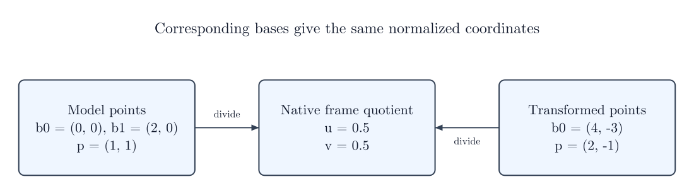
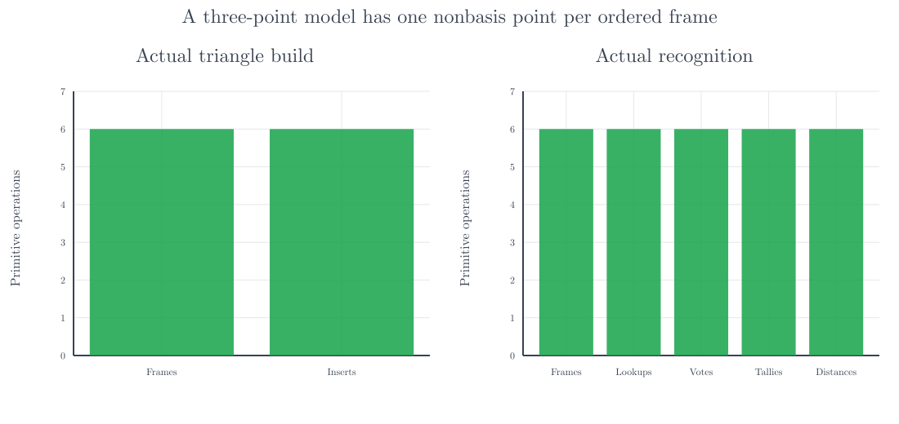
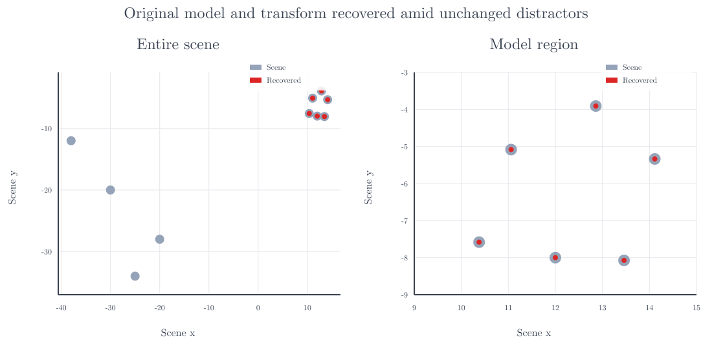
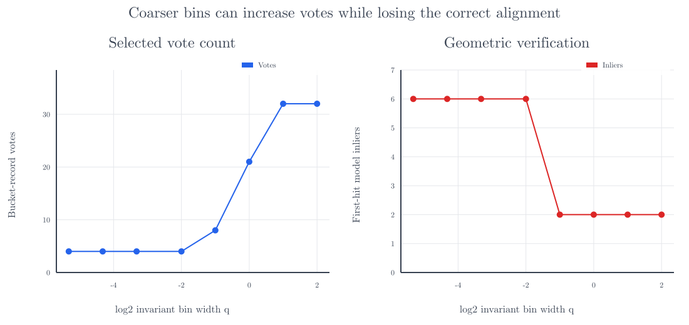
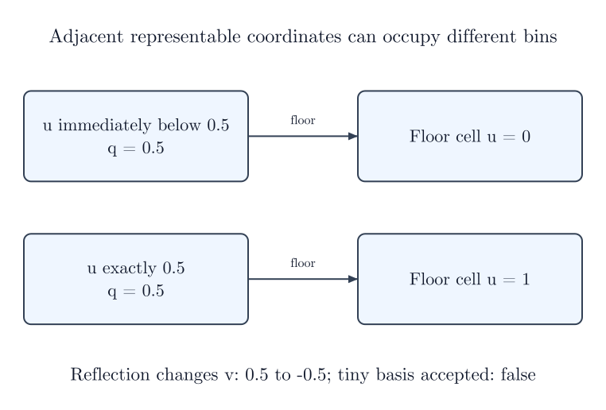
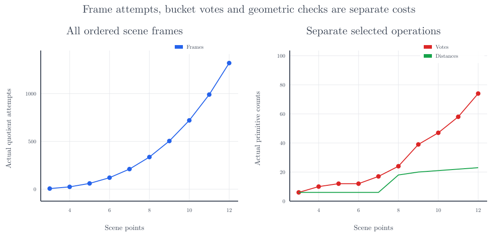
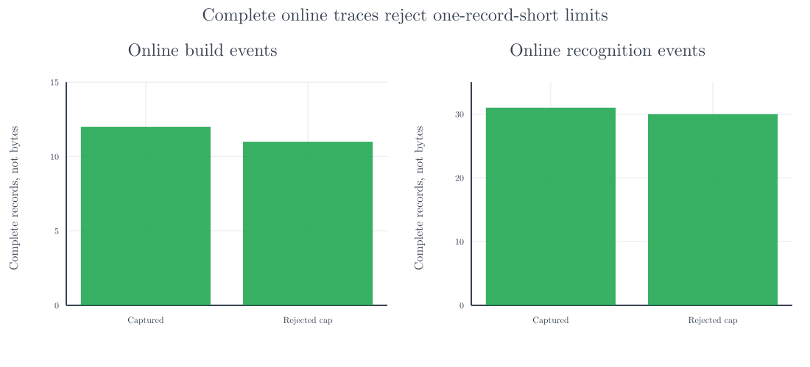

Geometric hashing: invariant frames, votes and geometric checks
Abstract
A rotated, uniformly scaled and translated point pattern has different coordinates but the same coordinates relative to a corresponding two-point frame. Geometric hashing stores those frame coordinates in bins and votes for model bases. Start with a quotient that can be checked by hand, then follow a tiny actual vote and recover the original six-point pattern among distractors. The same scene also exposes a failure: coarser bins can make the highest-vote candidate geometrically wrong. Native traces distinguish votes, recovered candidates and first-hit inliers; boundary, reflection, work-count and record-limit examples state the limits of this particular implementation.
A two-point frame removes a similarity
Let the ordered basis be b0=(0,0), b1=(2,0), and the query p=(1,1). In the frame that sends b0 to (0,0) and b1 to (1,0), p has coordinates (0.5,0.5). The perpendicular axis points counterclockwise from the basis vector. Rotate all three points by a quarter turn, scale by two and translate by (4,−3): the normalized coordinates remain (0.5,0.5), up to floating arithmetic. The program computes both frames through the same native quotient used by the hash builder.
#include <dm/dm.hpp>
namespace dm=datamunge;
int main(){
std::filesystem::create_directories("build");
const std::vector<dm::geometry::Point2D> points{{0,0},{2,0},{1,1}};
const auto transformed=dm::geometry::geometric_transform(points,2,std::numbers::pi/2,{4,-3});
const auto f=dm::geometry::geometric_hash_frame(points[2],points[0],points[1]);const auto g=dm::geometry::geometric_hash_frame(transformed[2],transformed[0],transformed[1]);
std::print("| frame | squared basis length | u | v | valid |\n| --- | ---: | ---: | ---: | --- |\n| Model | {:.1f} | {:.6f} | {:.6f} | {} |\n| Transformed | {:.1f} | {:.6f} | {:.6f} | {} |\n",f.length_squared,f.u,f.v,f.valid,g.length_squared,g.u,g.v,g.valid);
std::print("\nTransformed b0 ({:.6f}, {:.6f}); b1 ({:.6f}, {:.6f}); query ({:.6f}, {:.6f}).\n",transformed[0].x,transformed[0].y,transformed[1].x,transformed[1].y,transformed[2].x,transformed[2].y);
dm::graphics::Diagram d(64,1100);dm::graphics::DiagramNodeStyle box;box.width=4.4;box.height=2.4;box.font_size=22;
d.node("model",{0,0},"Model points\nb0 = (0, 0), b1 = (2, 0)\np = (1, 1)",box)
.node("frame",{6,0},std::format("Native frame quotient\nu = {:.1f}\nv = {:.1f}",f.u,f.v),box)
.node("scene",{12,0},std::format("Transformed points\nb0 = ({:.0f}, {:.0f})\np = ({:.0f}, {:.0f})",transformed[0].x,transformed[0].y,transformed[2].x,transformed[2].y),box)
.edge("model","frame","divide").edge("scene","frame","divide")
.text({6,2.5},"Corresponding bases give the same normalized coordinates",24).save_svg("build/gh_frame.svg");
if(!f.valid||!g.valid||std::abs(f.u-g.u)>1e-14||std::abs(f.v-g.v)>1e-14)throw std::runtime_error("frame invariance");
}| frame | squared basis length | u | v | valid |
|---|---|---|---|---|
| Model | 4.0 | 0.500000 | 0.500000 | true |
| Transformed | 16.0 | 0.500000 | 0.500000 | true |
Transformed b0 (4.000000, -3.000000); b1 (4.000000, 1.000000); query (2.000000, -1.000000).

Treat planar points as complex numbers. With nonzero basis difference d=b1−b0,
For an orientation-preserving similarity z↦az+t, a≠0, subtracting transformed origins cancels t, then dividing cancels a. Thus w is invariant in exact arithmetic. This proof does not cover reflection: complex conjugation sends w to its conjugate, reversing v. A general affine shear also does not preserve this quotient.
[Lamdan and Wolfson’s original paper](https://www.cs.utexas.edu/~grauman/courses/spring2007/395T/395T/papers/Lamdan88.pdf), Sections 2.1–2.2, describes the ordered-pair frame, quantized basis records and voting. Its publication details are recorded by [Tel Aviv University](https://cris.tau.ac.il/en/publications/geometric-hashing-a-general-and-efficient-model-based-recognition/). The native variant here indexes one model, examines all ordered scene bases and recovers only the global highest-vote candidate. It does not refine a fit, retry other candidates after poor verification or match edges. Those differences matter in the coarse-bin example below.
Follow actual table insertions and a tiny vote
Use the asymmetric triangle (0,0),(2,0),(0,1). Each of its six ordered bases has one nonbasis point, so building the table inserts six basis records. A corresponding scene basis has one point to vote with: a threshold of one is appropriate here; the default threshold of two would reject this tiny triangle. These are actual records captured during the executing build and recognition, not recomputed histories.
#include <dm/dm.hpp>
namespace dm=datamunge;
int main(){
std::filesystem::create_directories("build");
const std::vector<dm::geometry::Point2D> model{{0,0},{2,0},{0,1}};const auto scene=dm::geometry::geometric_transform(model,2,0,{4,-3});
const auto built=dm::geometry::build_geometric_hash_trace(model,.25,12);const auto t=dm::geometry::recognize_trace(built.run.table,model,scene,0,1,31);
std::print("| model basis | other point | actual u | actual v | signed bin u | signed bin v |\n| --- | ---: | ---: | ---: | ---: | ---: |\n");
for(const auto&e:built.events)if(e.kind==dm::geometry::GeoHashEventKind::build_frame){const auto b=dm::geometry::geometric_hash_bin(e.u,e.v,.25);std::print("| ({}, {}) | {} | {:.4f} | {:.4f} | {} | {} |\n",e.first,e.second,e.point,e.u,e.v,b.u,b.v);}
std::print("\n| scene basis | scene point | model basis receiving actual vote | tally after |\n| --- | ---: | --- | ---: |\n");
for(const auto&e:t.events)if(e.kind==dm::geometry::GeoHashEventKind::vote&&e.first==0&&e.second==1)std::print("| ({}, {}) | {} | ({}, {}) | {} |\n",e.first,e.second,e.point,e.model_i,e.model_j,e.count);
const auto&m=t.run.match;const auto&w=t.run.work;
std::print("\nTiny recovered candidate {}; votes {}; inliers {}/{}; scale {:.1f}; angle {:.1f}; translation ({:.1f}, {:.1f}); build records {}; recognition records {}; default-threshold found {}.\n",m.found,m.votes,m.inliers,model.size(),m.scale,m.angle,m.translation.x,m.translation.y,built.events.size(),t.events.size(),dm::geometry::recognize(built.run.table,model,scene,0).found);
auto build=dm::graphics::RPlot::barplot({double(built.run.work.frame_attempts),double(built.run.work.insertions)},{"Frames","Inserts"});build.title("Actual triangle build").xlab("").ylab("Primitive operations").y_limits(0,7);
auto online=dm::graphics::RPlot::barplot({double(w.frame_attempts),double(w.bin_lookups),double(w.vote_updates),double(w.candidate_comparisons),double(w.distance_checks)},{"Frames","Lookups","Votes","Tallies","Distances"});online.title("Actual recognition").xlab("").ylab("Primitive operations").y_limits(0,7);
dm::graphics::RLayout::create(1,2).add(build).add(online).size(1100,520).title("A three-point model has one nonbasis point per ordered frame").fit_panels().save_svg("build/gh_votes.svg");
if(!m.found||m.inliers!=3||m.votes!=1||t.events.size()!=31)throw std::runtime_error("tiny votes");
}| model basis | other point | actual u | actual v | signed bin u | signed bin v |
|---|---|---|---|---|---|
| (0, 1) | 2 | 0.0000 | 0.5000 | 0 | 2 |
| (0, 2) | 1 | 0.0000 | -2.0000 | 0 | -8 |
| (1, 0) | 2 | 1.0000 | -0.5000 | 4 | -2 |
| (1, 2) | 0 | 0.8000 | 0.4000 | 3 | 1 |
| (2, 0) | 1 | 1.0000 | 2.0000 | 4 | 8 |
| (2, 1) | 0 | 0.2000 | -0.4000 | 0 | -2 |
| scene basis | scene point | model basis receiving actual vote | tally after |
|---|---|---|---|
| (0, 1) | 2 | (0, 1) | 1 |
Tiny recovered candidate true; votes 1; inliers 3/3; scale 2.0; angle 0.0; translation (4.0, -3.0); build records 12; recognition records 31; default-threshold found false.

A table key is floor(u/q),floor(v/q), packed into two signed 32-bit cells; q is the invariant-coordinate bin width. All bucket records count, including repeated bases from different model points. A matching bucket casts one vote per stored record. After each scene basis, the unordered tally entries are compared with the global best using a strict greater-than test. Equal maxima retain the candidate reached first by this execution; unordered-map iteration does not define a portable lexicographic tie rule.
The selected model basis (mi,mj) and scene basis (sa,sb) recover the complex multiplier a=(sb−sa)/(mj−mi), then translation t=sa−a mi. Scale is a and angle is atan2(Im a,Re a). The implementation verifies only this selected candidate.
Preserve the original six-point model amid four distractors
Apply scale 1.7, angle 0.9 radians and translation (12,−8) to the original six points, then append the same four distractors. The table uses q=0.05 and the scene distance tolerance is 0.0001. The recovered transform and all six inliers match the original demonstration. Full-scene and local panels distinguish the distant clutter from the recovered model’s alignment; the zoom changes only view limits.
#include <dm/dm.hpp>
namespace dm=datamunge;
int main(){
std::filesystem::create_directories("build");
const std::vector<dm::geometry::Point2D> model{{0,0},{2,0},{1,1.5},{2.2,1.1},{.5,-.7},{-.4,.9}};
auto scene=dm::geometry::geometric_transform(model,1.7,.9,{12,-8});for(auto p:std::vector<dm::geometry::Point2D>{{-30,-20},{-25,-34},{-38,-12},{-20,-28}})scene.push_back(p);
const auto built=dm::geometry::build_geometric_hash_run(model,.05);const auto r=dm::geometry::recognize_run(built.table,model,scene,1e-4,2);const auto&m=r.match;
std::print("Applied scale 1.7, angle 0.9, translation (12, -8).\nRecovered scale {:.4f}, angle {:.4f}, translation ({:.4f}, {:.4f}); votes {}; inliers {}/{}; model basis ({}, {}) to scene basis ({}, {}).\n",m.scale,m.angle,m.translation.x,m.translation.y,m.votes,m.inliers,model.size(),m.model_i,m.model_j,m.scene_a,m.scene_b);
std::print("\nBuild frame attempts {}; inserted basis records {}; occupied bins {}; scene frame attempts {}; actual bucket-record votes {}; recovered candidates {}; verification distances {}.\n",built.work.frame_attempts,built.work.insertions,built.table.bins.size(),r.work.frame_attempts,r.work.vote_updates,r.work.recoveries,r.work.distance_checks);
const auto mapped=dm::geometry::geometric_transform(model,m.scale,m.angle,m.translation);std::vector<double> sx,sy,mx,my;for(auto p:scene){sx.push_back(p.x);sy.push_back(p.y);}for(auto p:mapped){mx.push_back(p.x);my.push_back(p.y);}
auto full=dm::graphics::RPlot::create();full.points(sx,sy,"Scene",{148,163,184},7).points(mx,my,"Recovered",{220,38,38},4).legend({"Scene","Recovered"},{{148,163,184},{220,38,38}}).title("Entire scene").xlab("Scene x").ylab("Scene y");
auto zoom=dm::graphics::RPlot::create();zoom.points(sx,sy,"Scene",{148,163,184},9).points(mx,my,"Recovered",{220,38,38},4).legend({"Scene","Recovered"},{{148,163,184},{220,38,38}}).title("Model region").xlab("Scene x").ylab("Scene y").x_limits(9,15).y_limits(-9,-3);
dm::graphics::RLayout::create(1,2).add(full).add(zoom).size(1100,540).title("Original model and transform recovered amid unchanged distractors").fit_panels().save_svg("build/gh_original.svg");
if(!m.found||m.inliers!=6||m.votes!=4)throw std::runtime_error("original similarity recovery");
}Applied scale 1.7, angle 0.9, translation (12, -8). Recovered scale 1.7000, angle 0.9000, translation (12.0000, -8.0000); votes 4; inliers 6/6; model basis (0, 2) to scene basis (0, 2).
Build frame attempts 120; inserted basis records 120; occupied bins 120; scene frame attempts 720; actual bucket-record votes 123; recovered candidates 1; verification distances 21.

More votes can select a worse geometric candidate
Keep that exact scene and tolerance, changing only q. With q=0.5 the selected candidate has eight votes but only two of six inliers, although the correct model copy is still present. Coarser bins merge unrelated invariant coordinates. A vote is a bucket-record hit, not an independent matched point or an inlier certificate. Increasing q does not monotonically improve recognition. found=true here means that a vote-qualified transform was recovered; callers need their own geometric acceptance rule. This native variant does not retry lower-vote candidates.
#include <dm/dm.hpp>
namespace dm=datamunge;
int main(){
std::filesystem::create_directories("build");
const std::vector<dm::geometry::Point2D> model{{0,0},{2,0},{1,1.5},{2.2,1.1},{.5,-.7},{-.4,.9}};auto scene=dm::geometry::geometric_transform(model,1.7,.9,{12,-8});for(auto p:std::vector<dm::geometry::Point2D>{{-30,-20},{-25,-34},{-38,-12},{-20,-28}})scene.push_back(p);
std::vector<double> qx,votes,inliers;std::print("| q | occupied bins | selected votes | inliers | candidate found | actual vote updates | recovered candidates |\n| ---: | ---: | ---: | ---: | --- | ---: | ---: |\n");
for(double q:std::array<double,8>{.025,.05,.1,.25,.5,1,2,4}){const auto table=dm::geometry::build_geometric_hash(model,q);const auto r=dm::geometry::recognize_run(table,model,scene,1e-4,2);std::print("| {:.3f} | {} | {} | {} | {} | {} | {} |\n",q,table.bins.size(),r.match.votes,r.match.inliers,r.match.found,r.work.vote_updates,r.work.recoveries);qx.push_back(std::log2(q));votes.push_back(r.match.votes);inliers.push_back(r.match.inliers);}
const std::vector<dm::geometry::Point2D> repeated{{0,0},{2,0},{0,1},{0,1}},smallscene{{0,0},{2,0},{0,1}};const auto d=dm::geometry::recognize(dm::geometry::build_geometric_hash(repeated,.25),repeated,smallscene,0,1);
std::print("\nDuplicate-point model: {} model points, {} scene points, {} inliers; candidate found {}. Several model points may use the same scene point.\n",repeated.size(),smallscene.size(),d.inliers,d.found);
auto v=dm::graphics::RPlot::create();v.lines(qx,votes,"Votes",{37,99,235},2).points(qx,votes,"",{37,99,235},5).title("Selected vote count").xlab("log2 invariant bin width q").ylab("Bucket-record votes").y_limits(0,1.2 * *std::max_element(votes.begin(),votes.end()));
auto i=dm::graphics::RPlot::create();i.lines(qx,inliers,"Inliers",{220,38,38},2).points(qx,inliers,"",{220,38,38},5).title("Geometric verification").xlab("log2 invariant bin width q").ylab("First-hit model inliers").y_limits(0,7);
dm::graphics::RLayout::create(1,2).add(v).add(i).size(1100,520).title("Coarser bins can increase votes while losing the correct alignment").fit_panels().save_svg("build/gh_quantization.svg");
if(inliers[4]!=2||votes[4]!=8||d.inliers!=4)throw std::runtime_error("coarse-bin and many-to-one counterexamples");
}| q | occupied bins | selected votes | inliers | candidate found | actual vote updates | recovered candidates |
|---|---|---|---|---|---|---|
| 0.025 | 120 | 4 | 6 | true | 108 | 1 |
| 0.050 | 120 | 4 | 6 | true | 123 | 1 |
| 0.100 | 117 | 4 | 6 | true | 179 | 1 |
| 0.250 | 77 | 4 | 6 | true | 548 | 1 |
| 0.500 | 50 | 8 | 2 | true | 2899 | 1 |
| 1.000 | 16 | 21 | 2 | true | 10034 | 1 |
| 2.000 | 7 | 32 | 2 | true | 20645 | 1 |
| 4.000 | 4 | 32 | 2 | true | 23796 | 1 |
Duplicate-point model: 4 model points, 3 scene points, 4 inliers; candidate found true. Several model points may use the same scene point.

Bin boundaries, reflection and the absolute basis cutoff
Floor bins are discontinuous. At q=0.5, the representable value immediately below u=0.5 belongs to cell 0, while u=0.5 belongs to cell 1. Arbitrarily small perturbations can therefore remove a vote near a boundary. Negative cells also use floor: u=−0.1 belongs to cell −1, not cell 0. Quantization width is dimensionless in the basis frame; the final tolerance is in scene units. They control different effects.
The exact similarity proof assumes nonzero bases. This implementation additionally skips actual squared basis lengths below 10^-18. That fixed absolute cutoff is not invariant under arbitrarily small rescaling, and rounded quotients can cross bin boundaries even when exact quotients agree. Reflection changes the sign of v; it is outside the orientation-preserving model used here.
#include <dm/dm.hpp>
namespace dm=datamunge;
int main(){
std::filesystem::create_directories("build");
const double below=std::nextafter(.5,0.);const auto left=dm::geometry::geometric_hash_bin(below,0,.5),right=dm::geometry::geometric_hash_bin(.5,0,.5),negative=dm::geometry::geometric_hash_bin(-.1,0,.5);
const auto f=dm::geometry::geometric_hash_frame({1,1},{0,0},{2,0}),reflected=dm::geometry::geometric_hash_frame({1,-1},{0,0},{2,0}),tiny=dm::geometry::geometric_hash_frame({1e-10,1e-10},{0,0},{2e-10,0});
std::print("| boundary input u | q | signed cell u |\n| ---: | ---: | ---: |\n| {:.17g} | 0.5 | {} |\n| {:.17g} | 0.5 | {} |\n| -0.1 | 0.5 | {} |\n",below,left.u,.5,right.u,negative.u);
std::print("\nOriginal frame v {:.1f}; reflected v {:.1f}; tiny squared basis length {:.3e}; tiny frame valid {}.\n",f.v,reflected.v,tiny.length_squared,tiny.valid);
dm::graphics::Diagram d(60,1100);dm::graphics::DiagramNodeStyle box;box.width=4.7;box.height=1.9;box.font_size=22;
d.node("below",{0,0},"u immediately below 0.5\nq = 0.5",box).node("cell0",{7,0},std::format("Floor cell u = {}",left.u),box)
.node("at",{0,-3},"u exactly 0.5\nq = 0.5",box).node("cell1",{7,-3},std::format("Floor cell u = {}",right.u),box)
.edge("below","cell0","floor").edge("at","cell1","floor")
.text({3.5,2.1},"Adjacent representable coordinates can occupy different bins",24)
.text({3.5,-5},std::format("Reflection changes v: {:.1f} to {:.1f}; tiny basis accepted: {}",f.v,reflected.v,tiny.valid),23).save_svg("build/gh_boundaries.svg");
if(left.u!=0||right.u!=1||negative.u!=-1||reflected.v!=-.5||tiny.valid)throw std::runtime_error("bin and frame limits");
}| boundary input u | q | signed cell u |
|---|---|---|
| 0.49999999999999994 | 0.5 | 0 |
| 0.5 | 0.5 | 1 |
| -0.1 | 0.5 | -1 |
Original frame v 0.5; reflected v -0.5; tiny squared basis length 4.000e-20; tiny frame valid false.

Count actual work without treating a hash lookup as a whole recognition
For N model points and M scene points, excluding the two basis points gives
Counts are zero for fewer than three points. Degenerate bases still incur attempts but do not insert or look up bins. Without degenerate pairs, offline storage has F_N records. Online work also includes V actual bucket-record hits, tally comparisons and first-hit verification, whose worst-case distances are N M. Each recognition validates all supplied table ids and input points before work. With T stored entries, average hash work is O(T+N+M+M^3+V+N M); hash internals can cost more. The largest per-basis tally can contain O(N²) model bases. Selected primitive counts below exclude validation, allocations, hash internals and arithmetic FLOPs; they are not timings.
The implementation examines every ordered scene basis, even after a good candidate exists. It does not implement the early-success behaviour discussed in the original paper. Use a fixed triangle and successively append the listed distractors to make the cubic number of frame attempts visible without implying universal clutter success.
#include <dm/dm.hpp>
namespace dm=datamunge;
int main(){
std::filesystem::create_directories("build");
const std::vector<dm::geometry::Point2D> model{{0,0},{2,0},{0,1}},clutter{{9,5},{-7,3},{12,-9},{-5,-11},{15,8},{-13,14},{21,-4},{6,17},{-19,-8}};const auto base=dm::geometry::geometric_transform(model,2,0,{4,-3});const auto table=dm::geometry::build_geometric_hash(model,.25);
std::vector<double>x,frames,updates,distances;std::print("| scene points | actual frame attempts | cubic formula | actual bin hits | actual vote updates | distance checks | candidate found | inliers |\n| ---: | ---: | ---: | ---: | ---: | ---: | --- | ---: |\n");
for(std::size_t count=0;count<=clutter.size();++count){auto scene=base;scene.insert(scene.end(),clutter.begin(),clutter.begin()+count);const auto r=dm::geometry::recognize_run(table,model,scene,1e-8,1);const auto m=scene.size(),formula=m*(m-1)*(m-2);std::print("| {} | {} | {} | {} | {} | {} | {} | {} |\n",m,r.work.frame_attempts,formula,r.work.bin_hits,r.work.vote_updates,r.work.distance_checks,r.match.found,r.match.inliers);x.push_back(m);frames.push_back(r.work.frame_attempts);updates.push_back(r.work.vote_updates);distances.push_back(r.work.distance_checks);if(r.work.frame_attempts!=formula)throw std::runtime_error("actual cubic frame attempts");}
auto f=dm::graphics::RPlot::create();f.lines(x,frames,"Frames",{37,99,235},2).points(x,frames,"",{37,99,235},5).title("All ordered scene frames").xlab("Scene points").ylab("Actual quotient attempts");
auto v=dm::graphics::RPlot::create();v.lines(x,updates,"Votes",{220,38,38},2).points(x,updates,"",{220,38,38},5).lines(x,distances,"Distances",{22,163,74},2).legend({"Votes","Distances"},{{220,38,38},{22,163,74}}).title("Separate selected operations").xlab("Scene points").ylab("Actual primitive counts").y_limits(0,1.4 * *std::max_element(updates.begin(),updates.end()));
dm::graphics::RLayout::create(1,2).add(f).add(v).size(1100,530).title("Frame attempts, bucket votes and geometric checks are separate costs").fit_panels().save_svg("build/gh_work.svg");
}| scene points | actual frame attempts | cubic formula | actual bin hits | actual vote updates | distance checks | candidate found | inliers |
|---|---|---|---|---|---|---|---|
| 3 | 6 | 6 | 6 | 6 | 6 | true | 3 |
| 4 | 24 | 24 | 10 | 10 | 6 | true | 3 |
| 5 | 60 | 60 | 12 | 12 | 6 | true | 3 |
| 6 | 120 | 120 | 12 | 12 | 6 | true | 3 |
| 7 | 210 | 210 | 17 | 17 | 6 | true | 3 |
| 8 | 336 | 336 | 24 | 24 | 18 | true | 2 |
| 9 | 504 | 504 | 39 | 39 | 20 | true | 2 |
| 10 | 720 | 720 | 47 | 47 | 21 | true | 2 |
| 11 | 990 | 990 | 58 | 58 | 22 | true | 2 |
| 12 | 1320 | 1320 | 74 | 74 | 23 | true | 2 |

Online complete records, ownership and strict inputs
Build traces emit each actual frame attempt and successful insertion. Recognition traces emit scene frames, lookups, votes, tally comparisons, a completed recovery and each checked distance. These are fixed-schema copied primitive records, with no synthetic initial input record. A positive quota is checked before each append; the default is one million records and zero disables only that optional quota. Ordinary and run APIs have no trace quota. There is no numerical replay, partial returned trace, truncation or caller mutation when admission fails.
This is an online event quota, not a precomputed whole-work estimate. The local calculation can perform earlier work before rejecting the next record. Inputs, root/work metadata, final ordinary table or candidate, working tally and allocator storage are excluded. Complete records are not numeric entries or bytes, and the quota is not a peak RAM limit. Copies of both records and ordinary results own their data independently. Empty calls have zero records.
All point vectors must be finite and fit int ids. Quantization is positive finite; tolerance is nonnegative finite with a finite square; min_votes is positive. The entire public table’s stored ids must be distinct valid model-basis ids before recognition or history work. That check cannot establish provenance: callers must still pass the same ordered model used to build the table. Nonfinite intermediates and out-of-range signed bin floors raise errors before casts. The fixed basis cutoff returns an invalid frame rather than dividing by a degenerate basis.
#include <dm/dm.hpp>
namespace dm=datamunge;
int main(){
std::filesystem::create_directories("build");
const std::vector<dm::geometry::Point2D> model{{0,0},{2,0},{0,1}};const auto built=dm::geometry::build_geometric_hash_trace(model,.25,12);const auto t=dm::geometry::recognize_trace(built.run.table,model,model,0,1,31);
bool build_rejected=false,recognition_rejected=false,badpoint=false,badtable=false,badthreshold=false;
try{(void)dm::geometry::build_geometric_hash_trace(model,.25,11);}catch(const std::length_error&){build_rejected=true;}
try{(void)dm::geometry::recognize_trace(built.run.table,model,model,0,1,30);}catch(const std::length_error&){recognition_rejected=true;}
auto invalid=model;invalid.back().x=std::numeric_limits<double>::quiet_NaN();try{(void)dm::geometry::build_geometric_hash_trace(invalid,.25,1);}catch(const std::invalid_argument&){badpoint=true;}
auto corrupt=built.run.table;corrupt.bins[0].push_back({0,99});try{(void)dm::geometry::recognize_trace(corrupt,model,model,0,1,1);}catch(const std::invalid_argument&){badtable=true;}
try{(void)dm::geometry::recognize_trace(built.run.table,model,model,0,0,1);}catch(const std::invalid_argument&){badthreshold=true;}
auto copy=t;copy.events[0].u=999;copy.run.match.translation.x=999;auto bcopy=built;bcopy.run.table.bins.clear();const bool owned=t.events[0].u!=999&&t.run.match.translation.x!=999&&built.run.table.bins.size()==6;
std::print("| history | complete captured records | rejected cap | rejection observed |\n| --- | ---: | ---: | --- |\n| Triangle build | {} | 11 | {} |\n| Triangle recognition | {} | 30 | {} |\n",built.events.size(),build_rejected,t.events.size(),recognition_rejected);
std::print("\nIndependent copies {}; invalid final point before quota {}; invalid table id before quota {}; nonpositive threshold before quota {}; empty build events {}; empty recognition events {}; zero disables optional quota: {} records.\n",owned,badpoint,badtable,badthreshold,dm::geometry::build_geometric_hash_trace({}).events.size(),dm::geometry::recognize_trace({}, {}, {}).events.size(),dm::geometry::recognize_trace(built.run.table,model,model,0,1,0).events.size());
auto b=dm::graphics::RPlot::barplot({double(built.events.size()),11.},{"Captured","Rejected cap"});b.title("Online build events").xlab("").ylab("Complete records, not bytes").y_limits(0,15);
auto r=dm::graphics::RPlot::barplot({double(t.events.size()),30.},{"Captured","Rejected cap"});r.title("Online recognition events").xlab("").ylab("Complete records, not bytes").y_limits(0,35);
dm::graphics::RLayout::create(1,2).add(b).add(r).size(1100,500).title("Complete online traces reject one-record-short limits").fit_panels().save_svg("build/gh_controls.svg");
if(!build_rejected||!recognition_rejected||!owned||!badpoint||!badtable||!badthreshold)throw std::runtime_error("online trace contracts");
}| history | complete captured records | rejected cap | rejection observed |
|---|---|---|---|
| Triangle build | 12 | 11 | true |
| Triangle recognition | 31 | 30 | true |
Independent copies true; invalid final point before quota true; invalid table id before quota true; nonpositive threshold before quota true; empty build events 0; empty recognition events 0; zero disables optional quota: 31 records.

The exact frame proof explains the method; actual execution exposes its limits. Votes depend on quantized coordinates and bucket multiplicity, while first-hit inliers depend on scene-unit tolerance and need not be one-to-one. The retained original model is recovered at its original settings, and the same scene at a coarser bin width refutes unconditional recognition claims. Constant point sets, exact-rational grid checks and explicit distractors suffice here; no unrelated external dataset or timing benchmark is needed.